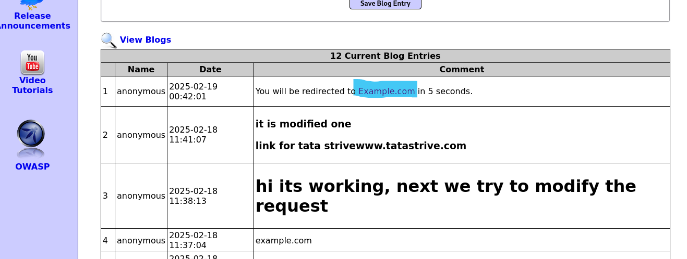
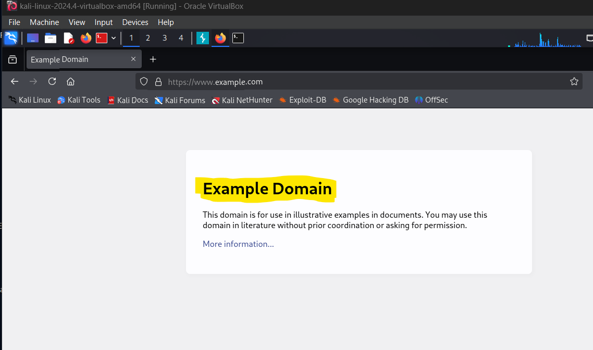

By Imteyaz Ali | Cybersecurity Enthusiast
This document explores HTML injection vulnerabilities, their impact, and how to mitigate them. HTML injection occurs when an attacker injects malicious HTML or JavaScript into a web application. This can lead to defacement, data theft, or phishing attacks. Understanding this vulnerability is critical for securing modern web applications.
HTML Injection is a type of security vulnerability where an attacker injects malicious HTML or JavaScript code into a web application. The injected code can alter the behavior or appearance of the application, potentially leading to harmful consequences. There are three main types of HTML injection:
The following tools were used to demonstrate HTML injection vulnerabilities:
These tools provide a safe and controlled environment for testing and understanding vulnerabilities like HTML injection.
To identify and exploit HTML injection vulnerabilities, follow these steps:
This process helps identify potential vulnerabilities and understand their impact on the application.
In this example, a persistent payload was injected into a comment section. The payload was stored in the application's database and executed every time the affected page was loaded. This demonstrates how attackers can use stored injection to deliver malicious scripts to multiple users.
In this example, a reflected payload was injected via URL parameters. When users clicked the malicious link, the payload was executed in their browser. This highlights the importance of validating and sanitizing user inputs to prevent reflected injection attacks.
To prevent HTML injection vulnerabilities, developers should implement the following strategies:
By adopting these practices, developers can significantly reduce the risk of HTML injection vulnerabilities in their applications.
HTML injection is a critical vulnerability that can compromise the security and integrity of web applications. By understanding its causes, impacts, and mitigation strategies, developers and security professionals can better protect their applications from malicious attacks. For more details, check out my GitHub repository: GitHub Profile.